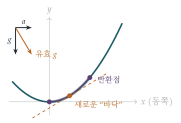

STEP II 2021, 문제 10
다음으로 넘어가기 전에 문제를 먼저 읽어 보자. 이 문제는 OCR에서 내려받을 수 있는 2021년 STEP 문제지 모음(zip 파일)의 STEP II 문제지에 있다: www.ocr.org.uk/Images/696588-2021-past-papers.zip
도입
기차가 역을 출발할 때 우리는 몸이 좌석 뒤로 눌리는 것을 느낀다. 탁자 위 커피 잔의 수면은 기울어지고, 바닥에 놓인 공은 뒤쪽으로 굴러간다. 기차 안에서 보면 마치 중력이 기울어져서 아래쪽뿐 아니라 약간 뒤쪽으로도 향하는 것처럼 보인다. 아인슈타인(Einstein)은 이것이 단순한 비유 이상이라는 깨달음을 “내 생애 가장 행복한 생각”이라고 불렀다. 국소적으로는 중력과 가속도를 구별할 수 없다는 것이다.
이 문제에서는 가속하는 기차 안의 휘어진 철사에 구슬이 꿰어져 있다. 기차에서 보면 구슬은 탄젠트 값이 \(a/g\)인 각만큼 기울어진 중력장 속에 있는 것과 똑같이 행동한다. 철사의 맨 아래는 더 이상 가장 낮은 점이 아니며, 구슬은 새로운 평형점(equilibrium)을 중심으로 진동한다.
시작하기 전에
기차가 서쪽(\(x\)의 음의 방향)으로 \(a\)의 가속도로 가속한다. 기차 안의 관찰자에게는 질량 \(m\)인 물체에 어떤 “가상의” 힘이 작용하는 것처럼 보이는가?
기차의 좌표계에서는 가상력(fictitious force) \(-m \times (\text{좌표계의 가속도})\)를 더하면 뉴턴(Newton)의 제2법칙이 성립한다. 좌표계는 \(x\) 방향으로 \(-a\)의 가속도를 가지므로, 가상력은 동쪽을 향하는 \(+ma\)이다. 중력과 합치면 구슬은 단위 질량당 \((a, -g)\)의 유효 중력(effective gravity)을 받는다. 즉 중력이 동쪽으로 기울어진 것이다.
차근차근 풀기
단계 1 원점에서는 정지할 수 없다
원점에서 철사 \(ky = x^2\)는 수평이다. 그곳에서 수직항력(normal reaction)은 연직 방향이므로 동쪽을 향하는 가상력 \(ma\)를 상쇄할 수 없다. 철사 방향의 알짜힘은 \(ma \neq 0\)이므로, 구슬은 기차에 대해 정지해 있을 수 없다.■
단계 2 에너지 방정식
수직항력 \(\mathbf{N}\)을 포함하여 기차의 좌표계에서 뉴턴 법칙을 써 보자. 그다음 속도 \((\dot x, \dot y)\)와 내적(dot product)을 취하라. 왜 \(\mathbf{N}\)이 사라지는가?
기차의 좌표계에서 \[m(\ddot x, \ddot y) = \mathbf{N} + (ma, -mg).\] 철사가 매끄러우므로 \(\mathbf{N}\)은 철사에 수직이고, 따라서 철사 방향인 속도 \((\dot x, \dot y)\)에도 수직이다. 속도와 내적을 취하면 \(\mathbf{N}\)이 없어진다. \[m\dot x\ddot x + m\dot y\ddot y = ma\dot x - mg\dot y, \qquad\text{따라서}\qquad \dot x(\ddot x - a) + \dot y(\ddot y + g) = 0. \qed\] 좌변은 \(\frac12(\dot x^2 + \dot y^2) - ax + gy\)의 도함수(derivative)이므로, 이 양은 일정하다.■
이것은 기차의 좌표계에서의 에너지 보존(conservation of energy)이며, 이때 단위 질량당 위치 에너지(potential energy) \(-ax + gy\)는 가상력을 포함한다.
단계 3 얼마나 높이 올라가는가?
구슬이 원점에서 정지 상태로 출발하므로 상수는 \(0\)이다. 가장 높은 점에서 구슬은 순간적으로 정지한다. 이로부터 어떤 방정식을 얻는가?
정지해 있을 때 \(\frac12(\dot x^2 + \dot y^2) = 0\)이므로 \(ax = gy\)이다. \(y = \frac{x^2}{k}\)를 대입하면 \(ax = \frac{gx^2}{k}\)이므로, (출발점 \(x = 0\)을 제외하면) \(x = \frac{ak}{g}\)이고 \[b = \frac{a^2k}{g^2}. \qed\] 구슬은 철사를 따라 동쪽 위로 점 \(\bigl(\frac{ak}{g}, \frac{a^2k}{g^2}\bigr)\)까지 올라갔다가 다시 원점으로 돌아오고, 이를 반복한다.
단계 4 가장 빠른 점
속력의 제곱을 \(x\)만의 함수로 나타내라. 어디에서 최대가 되는가?
속력의 제곱은 \(2(ax - gy) = 2\bigl(ax - \frac{gx^2}{k}\bigr)\)로 \(x\)에 대한 이차식이며, 두 반환점의 한가운데인 \(x = \frac{ak}{2g}\)에서 최대가 된다. 그곳에서 속력의 제곱은 \(2\bigl(\frac{a^2k}{2g} - \frac{a^2k}{4g}\bigr) = \frac{a^2k}{2g}\)이므로, 최대 속력은 \[a\sqrt{\frac{k}{2g}}. \qed\]
\(x = \frac{ak}{2g}\)에서 철사의 기울기를 구하라. 이것은 유효 중력 \((a, -g)\)의 방향과 어떤 관계가 있는가?
기울기는 \(\frac{2x}{k} = \frac ag\)이다. 따라서 이 점에서 철사는 유효 중력에 수직이다. 즉 이 점이 기울어진 중력장에서 철사의 “가장 낮은” 점이며, 구슬은 이 점을 중심으로 진동한다(그림 11.5.1).

돌아보기
편리한 좌표계에서 생각하고, 가상력을 더하라. 기차의 좌표계에서는 철사가 고정되어 있으며, 그 대가는 일정한 힘 하나가 추가되는 것뿐이다.
속도와 내적을 취하라. 이렇게 하면 구속력(constraint force)이 사라지고 에너지 방정식을 얻는다.
답을 해석하라. 반환점과 가장 빠른 점에는 기하학적 의미가 있다. 유효 중력이 기울어져 있는 것이다.
숨은 수학
가상력
뉴턴 법칙은 관성계(inertial frame), 즉 가속하지 않는 좌표계에서 성립한다. 가속하는 좌표계에서는 가상력을 더하여 뉴턴 법칙을 되살릴 수 있다. 가속도가 \(\mathbf{A}\)인 좌표계에서는 \(-m\mathbf{A}\)를 더하고, 회전하는 좌표계에서는 원심력(centrifugal force)과 코리올리 힘(Coriolis force)을 더한다. 이 힘들은 어떤 물체도 작용하지 않으므로 가상력이라고 부르며, 좌표계 때문에 생겨나는 것이다. 그러나 그 좌표계 안에 있는 사람에게는 완벽하게 실재하는 힘이다. 원심력은 지구를 극 방향으로 납작하게 만들고, 코리올리 힘은 허리케인이 도는 방향(북반구에서는 시계 반대 방향)을 정하며 장거리 포탄의 경로를 휘게 한다.
등가 원리
일정한 가상력 \(-m\mathbf{A}\)는 중력과 똑같이 질량에 비례한다. 닫힌 상자 안에서 하는 어떤 실험으로도 상자가 행성 위에 놓여 있는지 빈 공간에서 가속하고 있는지 구별할 수 없다. 이것이 등가 원리(equivalence principle)이다. 아인슈타인은 이를 일반 상대성 이론(general relativity)의 출발점으로 삼았다. 가속하는 상자를 가로지르는 빛은 휘어 보이므로, 중력장에서도 빛은 휘어야 한다. 또 가속하는 로켓의 앞쪽과 뒤쪽에 있는 시계는 서로 다른 빠르기로 가므로, 중력장에서 높이가 다른 시계들도 그래야 한다. 두 예측은 모두 확인되었으며, 두 번째 효과는 모든 GPS 위성에서 보정해야 한다. 이 효과만으로도 위성의 시계는 지상의 시계보다 하루에 약 \(45\)마이크로초씩 빨리 가기 때문이다.
1907년, 베른의 특허청에서 일하던 아인슈타인은 특수 상대성 이론(special relativity)에 관한 총설 논문을 쓰고 있었다. 그때 훗날 그가 회상한 대로 “내 생애 가장 행복한 생각”이 떠올랐다. 지붕에서 자유 낙하하는 사람은 자신의 무게를 느끼지 못한다는 것이다. 낙하하는 좌표계를 택하면 중력을 “변환하여 없앨” 수 있다. 이 생각을 1915년의 일반 상대성 이론으로 완성하기까지는 8년의 시간과 많은 새로운 수학(가우스(Gauss)와 리만(Riemann)이 발전시킨 휘어진 공간의 미분기하학(differential geometry))이 더 필요했다.
사고 기술
가속도가 일정한 좌표계에서는 일정한 가상력이 작용한다. 이 힘은 위치 에너지에 포함시킬 수 있으며, 그 좌표계에서 에너지는 보존된다.
운동 방정식과 속도의 내적을 취하여 구속력을 없애는 기법은 어떤 좌표계에서나 통한다. 대학에서는 이것이 일반적인 원리가 된다. 방정식이 시간에 명시적으로 의존하지 않는 계에는 보존되는 에너지가 있다.
더 도전하기
기차 안의 대포. STEP I 2000, 문제 9 문제를 풀어 보자. 가속하는 객차 안에서 발사한 포탄을 다루는데, 여기서 가속도는 중력이 기울어진 것처럼 작용한다.
맞바람. STEP II 2006, 문제 11 문제를 풀어 보자. 일정한 맞바람을 받는 포물체를 다루는데, 바람 때문에 포물체가 땅에 떨어지기 전에 발사한 쪽으로 되밀려 올 수도 있다.
기차 안의 커피. 가속하는 기차 안에서 커피 잔의 수면은 수평면과 \(\arctan(a/g)\)의 각을 이루는 평면임을 보여라.
작은 진동. \(x = \frac{ak}{2g}\)를 중심으로 한 구슬의 작은 진동의 주기를 구하라. (힌트: 새로운 바닥 근처에서 철사는 반지름이 곡률 반지름(radius of curvature)과 같은 원으로 근사된다.)
더 읽을거리
Daniel Kleppner & Robert Kolenkow, An Introduction to Mechanics (Cambridge University Press). 비관성 좌표계와 가상력을 다룬 장.
Albert Einstein, Relativity: The Special and the General Theory (여러 판본). 가속하는 상자 이야기를 포함한, 아인슈타인이 직접 쓴 대중적인 해설서.
Pedro Ferreira, The Perfect Theory (Little, Brown). 일반 상대성 이론의 일대기.